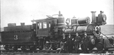

Timeline for the N-C-O Ry.
by Tom Armstrong


| N-C-O Timeline | |
| December 12, 1879 | The "Western Nevada Railroad Company" incorporated. |
| June, 1880 | "The Nevada and Oregon Railroad Company" incorporated in place of the "Western Nevada Railroad Company." |
| April 25, 1881 | The "Nevada and Oregon Railroad Company" incorporated after "The Nevada and Oregon Railroad Company" (notice that the word "The" was dropped) defaulted in complying with a provision of its charter. |
| May 28, 1881 | First spike driven in Reno, on the Nevada and Oregon Railway. |
| September 27, 1881 | The famous stockholders meeting held in Reno, in which two men were shot. Squire Scoville died and Daniel Balch recovered. The trial saw the first use in Nevada of a typewriter to produce a transcript of a trial. |
| October 2, 1882 | First operations begin, with service to Oneida, Calif. |
| April 17, 1884 | The "Nevada and Oregon Railroad Company" sold through foreclosure to the Moran Brothers (the railroad was not incorporated, but was sometimes called the "Nevada and California Railroad"). |
| December 8, 1884 | Rails extended to Junction House, Calif. (37 miles). |
| October 1, 1885 | The "Sierra Valley and Mohawk Railroad" was incorporated. |
| August, 1887 | Work halted on the incomplete Sierra Valley & Mohawk RR. |
| March 31, 1888 | The "Nevada-California-Oregon Railway" was incorporated. |
| June 6, 1888 | Rails reached Doyle, Calif. (57 miles). |
| September 10, 1888 | Rails reached Liegan, Calif. (70 miles). |
| November, 1890 | Service began to Amedee, Calif. (About 80 miles). |
| June 1, 1900 | Service began to Termo, Calif. (About 130 miles) |
| January 1, 1893 | The Moran Brothers railroad property was sold to the "Nevada-California-Oregon Railway." |
| January 17, 1895 | "Sierra Valley and Mohawk Railroad" was sold to the "Sierra Valleys Railway Company" (which had been incorporated on January 5, 1895). |
| June, 1896 | Service began to Clairville, Calif. on the completed SV&M RR. |
| June 21, 1899 | Famous wreck on SV&M RR, which killed engineer Chambers. |
| March 14, 1901 | The "Sierra Valleys Railway Company" sold through foreclosure to the Nevada-California-Oregon Railway, but operations continued under the SVRY name. |
| April 1, 1902 | Service began to Madeline, Calif. (about 144 miles). |
| May 4, 1903 | SVR reached Clio, Calif. |
| October 1, 1907 | Service began to Likely, Calif. (About 164 miles). |
| December 1, 1908 | Service began to Alturas, Calif. (About 185 miles). |
| 1909 | Western Pacific Railway completed. |
| January 10, 1912 | Service began to Lakeview, Oregon (238 miles). |
| July 1, 1911 | The "Sierra and Mohawk Railway Company" (incorporated by the N-C-O Ry. On June 14, 1911) took over operations of the "Sierra Valley Railway Company." |
| March, 1913 | Fernley & Lassen Railway crossed the N-C-O at Wendel, Calif. |
| January 1, 1915 | The "Sierra and Mohawk Railway" sold to the N-C-O Ry. |
| 1915 | Locomotives and rolling stock purchased from the Florence & Cripple Creek Railroad. |
| August, 1916 | Plumas Branch extended to its final terminus at Davies Mill, Calif. |
| June 11, 1917 | Southern 103 miles (including the Sierra Valley branch) sold to the Western Pacific Railway (narrow gauge operations ended on January 30, 1918). |
| October 31, 1922 | Service between Wendel and Hackstaff (16 miles) discontinued. |
| October, 1926 | Southern Pacific Railroad acquired control of the N-C-O Ry. |
| October 24, 1927 | Standard gauge operations began from Wendel to Alturas. |
| May 27, 1928 | All narrow gauge service ended with completion of standard gauging to Lakeview. |
| September 15, 1929 | The new Modoc Line (Klamath Falls to Wendel) opened. |


©2000 blanchard design,
all rights reserved